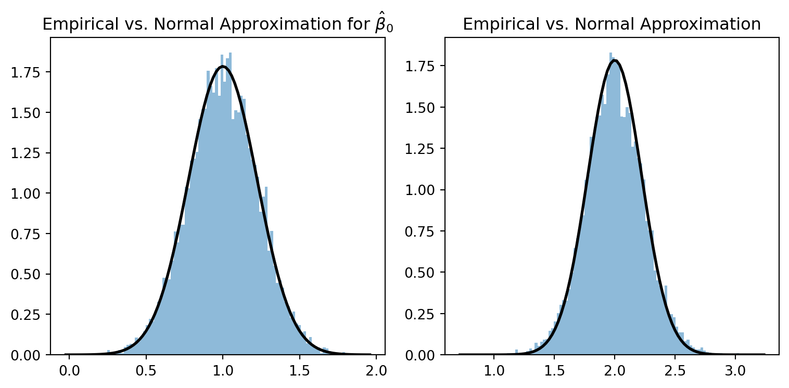

This assignment covers two topics: Monte Carlo simulations and Bootstrap, with a focus on time series models. As usual, I will discuss the basic ideas behind the concepts and then present the assignment.
Monte Carlo experiments
Monte Carlo experiments is a handy tool to assess the quality of the asymptotic approximation of econometric estimators.
Consider the following linear model \[
y_t = \beta^o_0 + \beta^o_1 x_t + u_t, t = 1,\dots, T,
\] where \(y_t\), \(x_t\), and \(u_t\) are random variables and \(\beta^o_0\) and \(\beta^o_1\) are parameters to be estimated. In matrix form, the model can be written as \[
Y_t = \mathbf{X}_t \beta^o + U_t,
\] where \[
\underbracket{Y}_{(T\times 1)}=\begin{pmatrix}Y_{1}\\
\vdots\\
Y_{T}
\end{pmatrix},\,\underbracket{\mathbf{X}}_{T\times 2}=\begin{pmatrix}1 & x_{1}\\
\vdots & \vdots\\
1 & x_{T}
\end{pmatrix},\,\underbracket{U}_{(T\times 1)}=\begin{pmatrix}u_{1}\\
\vdots\\
u_{T}
\end{pmatrix},\,\underbracket{\beta^{o}}_{(2\times 1)}=\begin{pmatrix}\beta_{0}^{o}\\
\beta_{1}^{o}
\end{pmatrix}
\]
We will assume that 1. \((u_t, x_t)\) are i.i.d. over \(t\); 2. \(E(u_t|x_t) = 0\), \(t=1,\dots,T\); 3. \(E(|x_t|^4)<\infty\) and \(E(|u_t|^4)<\infty\); 4. \(E(u^t|x_t) = \sigma^2>0\).
Under these assumptions, the OLS estimator of \(\beta^o\), \[
\hat{\beta}^{ols} = \left(\mathbf{X}'\mathbf{X}\right)^{-1}\mathbf{X}'Y
\] is unbiased, consistent, and asymptotically normal: \[
E(\hat{\beta}^{ols}) = \beta^o, \,\,\, \hat{\beta}^{ols} \xrightarrow{p} \beta^o,\,\,\, \left(\hat{\beta}^{ols}-\beta^o\right) \xrightarrow{d} N\left[0, \sigma^2E\left(\mathbf{X}'\mathbf{X}\right)^{-1}\right].
\]
These results are derived theoretically. For unbiasedness, the law of iterated expectations and the iid of \((u_t,x_t)\) gives \[
E\left(E\left(\hat{\beta}^{ols}|\mathbf{X}\right)\right)=\beta^{o}+E\left(\left(\mathbf{X}'\mathbf{X}\right)^{-1}\mathbf{X}'E(U|\mathbf{X})\right)=\beta^{o}.
\] Under the iid assumption and the restrictions on the fourth moments of \(u_t\) and \(x_t\), we have \[
\frac{1}{T}\mathbf{X}'U=\frac{1}{n}\sum_{t=1}^{T}\begin{pmatrix}u_{t}\\
x_{t}u_{t},
\end{pmatrix}\xrightarrow{p}\begin{pmatrix}0\\
0
\end{pmatrix},\text{ and }\frac{1}{T}\mathbf{X}'\mathbf{X}=\frac{1}{T}\sum_{t=1}^{T}\begin{pmatrix}1 & x_{t}\\
x_{t}, & x_{t}^{2}
\end{pmatrix}\xrightarrow{p}\begin{pmatrix}1 & E(x_{t})\\
E(x_{t}), & E(x_{t}^{2})
\end{pmatrix}.
\] These convergences in probability deliver consistency of the OLS estimator \[
\hat{\beta}^{ols}=\beta^{o}+\left(\frac{1}{T}\mathbf{X}'\mathbf{X}\right)^{-1}\frac{1}{T}\mathbf{X}'U\xrightarrow{p}\beta^{o}+\begin{pmatrix}1 & E(x_{t})\\
E(x_{t}), & E(x_{t}^{2})
\end{pmatrix}^{-1}\begin{pmatrix}0\\
0
\end{pmatrix}=\beta^{o}.
\] Finally, iid, the moments’ restrictions, and the homoskedasticity assumptions, give \[
\sqrt{T}\left(\hat{\beta}^{ols}-\beta^{o}\right)\xrightarrow{d}N\left[0,\sigma^{2}\begin{pmatrix}1 & E(x_{t})\\
E(x_{t}), & E(x_{t}^{2})
\end{pmatrix}^{-1}\right].
\]
Consistency and asymptotic results, and they hold as \(T\to\infty\). Given a sample of size \(T\), say \(T=50\), how close is the distribution of \(\hat{\beta}^o\) the normal one postulated by the usual asymptotic theory? How close is \(\hat{\beta}^o\) to \(\beta^o\)? Unfortunately, theory only tells us that the larger the sample size, the better the normal approximation. Similarly, it tells us that \(\hat{\beta}^o-\beta^o\) is smaller the larger the sample size.
Monte Carlo simulations can help us determine how good these approximations are for a given size of \(T\). The idea is simple: we simulate a sample of \((u_t, x_t)\), \(t=1,\ldots,T\) from which we generate \(y_t\) (using a arbitrary value for \(\beta^o_0\) and \(\beta^o_1\).) We estimate the parameters using the simulated data. We repeat this operation many times, saving the estimated parameters. The saved parameters give the empirical distribution of the OLS estimator and help verify how closely the theory matches the empirical distribution.
The following code does a Monte Carlo for the linear model above:
import numpy as npimport matplotlib.pyplot as pltfrom scipy.stats import norm# Set parametersT =20beta_0_true =1beta_1_true =2sigma =1num_simulations =10000# Arrays to store the estimates from each simulationbeta_0_estimates = np.zeros(num_simulations)beta_1_estimates = np.zeros(num_simulations)# Run simulationsfor i inrange(num_simulations): x = np.random.normal(0, 1, T) u = np.random.normal(0, sigma, T) y = beta_0_true + beta_1_true * x + u# OLS estimation X = np.vstack([np.ones(T), x]).T beta_hat = np.linalg.inv(X.T @ X) @ X.T @ y beta_0_estimates[i] = beta_hat[0] beta_1_estimates[i] = beta_hat[1]# Plotting the resultsfig, ax = plt.subplots(1, 2, figsize=(8, 4))# Distribution of beta_0ax[0].hist(beta_0_estimates, bins=100, alpha=0.5, density=True)xmin, xmax = ax[0].get_xlim()x = np.linspace(xmin, xmax, 100)p = norm.pdf(x, beta_0_true, 1/np.sqrt(T))ax[0].plot(x, p, 'k', linewidth=2)ax[0].set_title(f'Empirical vs. Normal Approximation for $\\hat{{\\beta}}_0$')# Distribution of beta_1ax[1].hist(beta_1_estimates, bins=100, alpha=0.50, density=True)xmin, xmax = ax[1].get_xlim()x = np.linspace(xmin, xmax, 100)p = norm.pdf(x, beta_1_true, 1/np.sqrt(T))ax[1].plot(x, p, 'k', linewidth=2)ax[1].set_title(f'Empirical vs. Normal Approximation')plt.tight_layout()plt.show()

The approximation is excellent, even if \(T=20\). This might sound surprising since the normal distribution of \(\hat{\beta}^{ols}\) is normal when \(T\) is large. We get such a close agreement between the empirical distribution of \(\hat{\beta}^{ols}\) and the theoretical one because we are simulating \(u_t\) the data from a normal distribution independently from \(x_t\). When \(u_t|x_t\sim N(0,\sigma^2)\), the distribution of the OLS estimator is precisely normal, even when \(T=3\). Of course, if \(T\) is small, the estimator’s variance will be larger, but a normal distribution will approximate the OLS estimators’ distribution.
Instead of squinting at the histograms and the density implied by the CLT, we can modify the code to calculate the confidence interval at each simulation and see how many times the “true” values of the parameters fall into all the intervals generated. If the approximation is good, a 95% confidence interval should contain the “true” parameters 95% of the time.
import numpy as npimport matplotlib.pyplot as pltfrom scipy.stats import norm# Set parametersT =50beta_0_true =1beta_1_true =2sigma =1num_simulations =10000# Arrays to store the estimates from each simulationbeta_0_estimates = np.zeros(num_simulations)beta_1_estimates = np.zeros(num_simulations)beta_0_in = np.zeros(num_simulations)beta_1_in = np.zeros(num_simulations)# Run simulationsfor i inrange(num_simulations): x = np.random.normal(0,1,T) u = np.random.normal(0,sigma,T) y = beta_0_true + beta_1_true * x + u# OLS estimation X = np.vstack([np.ones(T), x]).T XXinv = np.linalg.inv(X.T @ X) beta_hat = XXinv @ X.T @ y beta_0_estimates[i] = beta_hat[0] beta_1_estimates[i] = beta_hat[1] u_hat = y - beta_hat[0] - beta_hat[1] * x sigma2_hat = np.dot(u_hat, u_hat)/(T-2) variance_hat = sigma2_hat*XXinv se_0 = np.sqrt(variance_hat[0,0]) se_1 = np.sqrt(variance_hat[1,1])## Check weather beta_0 in CI 95% beta_0_in[i] = beta_hat[0] -1.965*se_0 < beta_0_true < beta_hat[0] +1.965*se_0 beta_1_in[i] = beta_hat[1] -1.965*se_1 < beta_1_true < beta_hat[1] +1.965*se_1# Output the resultsprint(f"Empirical 95% CI for beta_0: {np.mean(beta_0_in)}")print(f"Empirical 95% CI for beta_1: {np.mean(beta_1_in)}")
Empirical 95% CI for beta_0: 0.9457
Empirical 95% CI for beta_1: 0.9428
The empirical coverage of the confidence intervals is only in the neighborhood of 95%. The reason is that we are estimating the variance of the coefficient, and in this case, the distribution of \(\hat{\beta}_1/se(\hat{\beta}_1)\) has a \(t\)-student distribution with \(T-1\) degrees of freedom. If you run the code above for \(T=50\), the confidence interval coverage will be closer to 95%.
Let us see what happens if we simulate \(x_t\) and \(u_t\) from a chi-squared distribution with \(5\) of freedom centered in a way to have mean zero and unit variance.
import numpy as npimport matplotlib.pyplot as pltfrom scipy.stats import norm# Set parametersT =50beta_0_true =1beta_1_true =2sigma =1num_simulations =10000# Arrays to store the estimates from each simulationbeta_0_estimates = np.zeros(num_simulations)beta_1_estimates = np.zeros(num_simulations)beta_0_in = np.zeros(num_simulations)beta_1_in = np.zeros(num_simulations)# Run simulationsfor i inrange(num_simulations): x = (np.random.chisquare(4,T) -4)/np.sqrt(2*4) u = (np.random.chisquare(4,T) -4)/np.sqrt(2*4) y = beta_0_true + beta_1_true * x + u# OLS estimation X = np.vstack([np.ones(T), x]).T XXinv = np.linalg.inv(X.T @ X) beta_hat = XXinv @ X.T @ y beta_0_estimates[i] = beta_hat[0] beta_1_estimates[i] = beta_hat[1] u_hat = y - beta_hat[0] - beta_hat[1] * x sigma2_hat = np.dot(u_hat, u_hat)/(T-2) variance_hat = sigma2_hat*XXinv se_0 = np.sqrt(variance_hat[0,0]) se_1 = np.sqrt(variance_hat[1,1])## Check weather beta_0 in CI 95% beta_0_in[i] = beta_hat[0] -1.965*se_0 < beta_0_true < beta_hat[0] +1.965*se_0 beta_1_in[i] = beta_hat[1] -1.965*se_1 < beta_1_true < beta_hat[1] +1.965*se_1# Output the resultsprint(f"Empirical 95% CI for beta_0: {np.mean(beta_0_in)}")print(f"Empirical 95% CI for beta_1: {np.mean(beta_1_in)}")
Empirical 95% CI for beta_0: 0.9397
Empirical 95% CI for beta_1: 0.9485
Even a \(T=50\), there is some difference between the empirical and theoretical coverage.
We can use the simulations to see what happens when the conditions on the moments of \(u_t\) and \(x_t\) are unsatisfied.
import numpy as npimport matplotlib.pyplot as pltfrom scipy.stats import norm# Set parametersT =150beta_0_true =1beta_1_true =2sigma =1num_simulations =10000# Arrays to store the estimates from each simulationbeta_0_estimates = np.zeros(num_simulations)beta_1_estimates = np.zeros(num_simulations)beta_0_in = np.zeros(num_simulations)beta_1_in = np.zeros(num_simulations)# Run simulationsfor i inrange(num_simulations): x = np.random.standard_cauchy(T) u = np.random.standard_cauchy(T) y = beta_0_true + beta_1_true * x + u# OLS estimation X = np.vstack([np.ones(T), x]).T XXinv = np.linalg.inv(X.T @ X) beta_hat = XXinv @ X.T @ y beta_0_estimates[i] = beta_hat[0] beta_1_estimates[i] = beta_hat[1] u_hat = y - beta_hat[0] - beta_hat[1] * x sigma2_hat = np.dot(u_hat, u_hat)/(T-2) variance_hat = sigma2_hat*XXinv se_0 = np.sqrt(variance_hat[0,0]) se_1 = np.sqrt(variance_hat[1,1])## Check weather beta_0 in CI 95% beta_0_in[i] = beta_hat[0] -1.965*se_0 < beta_0_true < beta_hat[0] +1.965*se_0 beta_1_in[i] = beta_hat[1] -1.965*se_1 < beta_1_true < beta_hat[1] +1.965*se_1# Output the resultsprint(f"Empirical 95% CI for beta_0: {np.mean(beta_0_in)}")print(f"Empirical 95% CI for beta_1: {np.mean(beta_1_in)}")
Empirical 95% CI for beta_0: 0.9764
Empirical 95% CI for beta_1: 0.9541
Bootstrap
The bootstrap is a statistical tool for estimating the distribution of a statistic based on random sampling with replacement. It allows for assessing a statistic’s variability and is beneficial in settings where the theoretical distribution of the statistic is unknown or difficult to derive.
In the context of a linear regression model, we can use the bootstrap to perform inference on the regression coefficients. Despite its theoretical intricacies, the bootstrap is conceptually simple and describing its application can be done quite easily.
Input: Dataset \((X, y)\) with \(n\) observations Fit original model: Estimate coefficients \(\beta\) from original dataset Store these coefficients coefficients Bootstrap procedure: For \(b = 1\) to $ (number of bootstrap samples): Create “bootstrap” sample \((X^*, y^*)\) by randomly sampling \(n\) observations with replacement from original dataset Fit linear model to bootstrap sample Estimate and store bootstrap coefficients \(\beta^*\) Calculate statistics: Compute variance of bootstrap coefficient estimates Optionally calculate confidence intervals using percentiles of bootstrap distribution Output: Original coefficients, bootstrap variance estimates, confidence intervals
import numpy as np# Set random seed for reproducibilitynp.random.seed(0)# Generate some sample dataT =100# Number of observationsx = np.random.normal(0, 1, T)u = np.random.normal(0, 1, T)beta_0_true =1beta_1_true =2# Simulate response variable yy = beta_0_true + beta_1_true * x + u# Function to fit linear modeldef fit_linear_model(x, y): X = np.vstack([np.ones(len(x)), x]).T beta_hat = np.linalg.inv(X.T @ X) @ (X.T @ y)return beta_hat# Initial fitinitial_beta = fit_linear_model(x, y)# Number of bootstrap samplesB =1000bootstrap_estimates = np.zeros((B, 2))# Perform bootstrap resamplingfor i inrange(B): indices = np.random.choice(range(T), size=T, replace=True) x_resampled = x[indices] y_resampled = y[indices] bootstrap_estimates[i] = fit_linear_model(x_resampled, y_resampled)# Compute standard errorsstandard_errors = bootstrap_estimates.std(axis=0)print("Bootstrap Standard Errors:")print("SE(beta_0):", standard_errors[0])print("SE(beta_1):", standard_errors[1])print("LM Standard Errors:")import statsmodels.api as smX = sm.add_constant(x)model = sm.OLS(y, X)results = model.fit()# Standard errors from statsmodelsstatsmodels_se = results.bseprint("Standard Errors from statsmodels OLS:")print("SE(beta_0):", statsmodels_se[0])print("SE(beta_1):", statsmodels_se[1])
Bootstrap Standard Errors:
SE(beta_0): 0.10061319113712466
SE(beta_1): 0.09469134082416591
LM Standard Errors:
Standard Errors from statsmodels OLS:
SE(beta_0): 0.10404543947505016
SE(beta_1): 0.10305046686003079
Linear model with dependent data
So far, we have assumed that \((u_t, x_t)\) are iid. With macroeconomic data, it is often the case that \((u_t, x_t)\) are correlated.
Consider the following model: \[
y_t = \beta_0 + \beta_1 x_t + u_t,
\] with \[
x_t = \phi_x x_{t-1} + \eta_i,\,\, |\phi_x|<1
\] and \[
u_t = \phi_u u_{t-1} + \varepsilon_t, \,\, |\phi_u|<1.
\]
If \(\eta_i\) and \(\varepsilon_t\) are independent, we will have that \(E(u_t|x_t)=0\) and so we can consistently estimate \(\beta_1\) by OLS. The asymptotic distribution of the OLS estimator will be normal, but the variance of this distribution is difficult to estimate. If we use the standard errors that do not consider the correlation over time of the variables, the inference will be off. We perform a simple Monte Carlo to see the impact of serial correlation in \(x_t\) and \(u_t\).
def simulate_ar1(n, phi, sigma):""" Simulate an AR(1) process. Parameters: n (int): Number of observations. phi (float): Coefficient of AR(1) process. sigma (float): Standard deviation of the innovation term. Returns: np.array: Simulated AR(1) error terms. """ errors = np.zeros(n) eta = np.random.normal(0, sigma, n) # white noisefor t inrange(1, n): errors[t] = phi * errors[t -1] + eta[t]return errorsdef simulate_regression_with_ar1_errors(n, beta0, beta1, phi_x, phi_u, sigma):""" Simulate a regression model with AR(1) error terms. Parameters: n (int): Number of observations. beta0 (float): Intercept of the regression model. beta1 (float): Slope of the regression model. phi (float): Coefficient of the AR(1) process in the error term. sigma (float): Standard deviation of the innovation term in the AR(1) process. Returns: tuple: x (independent variable), y (dependent variable), errors (AR(1) process) """ x = simulate_ar1(n, phi_x, sigma) u = simulate_ar1(n, phi_u, sigma) y = beta0 + beta1 * x + ureturn x, y, uT =500# Number of observationsbeta0 =1.# Interceptbeta1 =2# Slopephi_x =0.7# AR(1) coefficient for xphi_u =0.7# AR(1) coefficient for the errorssigma =1# Standard deviation of the white noise# Simulating the model## Do monte carlot_stats_hc = []t_stats_hac = []for i inrange(1000): x, y, errors = simulate_regression_with_ar1_errors(T, beta0, beta1, phi_x, phi_u, sigma) X = sm.add_constant(x) model = sm.OLS(y, X).fit(cov_type='HC1') t_stats_hc.append(model.t_test('x1=2').tvalue)## Use HAC: takes into account serial correlation model2 = sm.OLS(y, X).fit(cov_type='HAC', cov_kwds={'maxlags': np.floor(1.3*T**(1/2)).astype(int)}) t_stats_hac.append(model2.t_test('x1=2').tvalue) ## Check we reject the null hypothesis at alpha=0.05 about 5% of the timeprint(f"Empirical size test beta_1=2 using White SE: {np.mean(np.abs(np.array(t_stats_hc)) >1.965)}")print(f"Empirical size test beta_1=2 using HAC SE: {np.mean(np.abs(np.array(t_stats_hac)) >1.965)}")
Empirical size test beta_1=2 using White SE: 0.255
Empirical size test beta_1=2 using HAC SE: 0.075
We can use the bootstrap to obtain the standard errors of \(\hat{\beta}_1\). Unfortunately, with time-dependent data, the bootstrap needs to be modified. Instead of sampling with replacement observations from \(y_t\) and \(x_t\), we will sample blocks of length \(\ell\) with replacement. By resampling blocks, we ensure that the correlation in the data is preserved.
The moving block bootstrap (MBB) adapts the traditional bootstrap method to handle data where observations are dependent, such as in time series analysis. This approach involves resampling consecutive observation blocks to preserve the data’s internal structure and dependence.
Steps for Moving Block Bootstrap (MBB):
** Choose Block Length **: Determine the length of the blocks, \(\ell\), that will be resampled. This length should be chosen based on the data’s correlation structure: it should be large enough to capture the dependence within the data.
Generate Blocks: From the original dataset of size \(T\), generate new datasets by sampling blocks of length \(\ell\) and concatenate them until reaching the size \(T\). Blocks should be sampled with replacement.
Resample Data within Blocks: Sample \(y_t\) and \(x_t\) using the sampled blocks. This is the bootstrapped dataset.
Refit the Model: Fit the regression model to each bootstrapped dataset and collect the estimated parameters for each dataset.
Calculate Statistics: Calculate the standard deviation of the bootstrap estimate. These are the standard errors.
import numpy as npimport statsmodels.api as smdef moving_block_bootstrap(x, y, block_length, num_bootstrap): T =len(y) # Total number of observations num_blocks = T // block_length + (1if T % block_length else0)# Fit the original model X = sm.add_constant(x) original_model = sm.OLS(y, X) original_results = original_model.fit() bootstrap_estimates = np.zeros((num_bootstrap, 2)) # Storing estimates for beta_0 and beta_1# Perform the bootstrapfor i inrange(num_bootstrap):# Create bootstrap sample bootstrap_indices = np.random.choice(np.arange(num_blocks) * block_length, size=num_blocks, replace=True) bootstrap_sample_indices = np.hstack([np.arange(index, min(index + block_length, T)) for index in bootstrap_indices]) bootstrap_sample_indices = bootstrap_sample_indices[:T] # Ensure the bootstrap sample is the same size as the original data x_bootstrap = x[bootstrap_sample_indices] y_bootstrap = y[bootstrap_sample_indices]# Refit the model on bootstrap sample X_bootstrap = sm.add_constant(x_bootstrap) bootstrap_model = sm.OLS(y_bootstrap, X_bootstrap) bootstrap_results = bootstrap_model.fit()# Store the estimates bootstrap_estimates[i, :] = bootstrap_results.paramsreturn bootstrap_estimates# Run moving block bootstrapblock_length =12num_bootstrap =1000x, y, errors = simulate_regression_with_ar1_errors(200, beta0, beta1, phi_x, phi_u, sigma)bootstrap_results = moving_block_bootstrap(x, y, block_length, num_bootstrap)# Calculate and print standard errorsbootstrap_standard_errors = bootstrap_results.std(axis=0)print("Bootstrap Standard Errors:")print("SE(beta_0):", bootstrap_standard_errors[0])print("SE(beta_1):", bootstrap_standard_errors[1])
Bootstrap Standard Errors:
SE(beta_0): 0.026787210831234053
SE(beta_1): 0.05979213797333231
Assignment 3
Task
Apply Monte Carlo simulations combined with bootstrap methods to evaluate the quality of inference on \(\beta_1\) using serially correlated data.
Steps
Simulate data according to simulate_regression_with_ar1_errors.
Calculate bootstrap standard errors.
Construct a 95% confidence interval for \(\beta_1\) using both the bootstrap and the theoretical standard errors.
Perform Monte Carlo simulations for \(T=100\) and \(T=500\), and assess the empirical coverage of the confidence intervals.